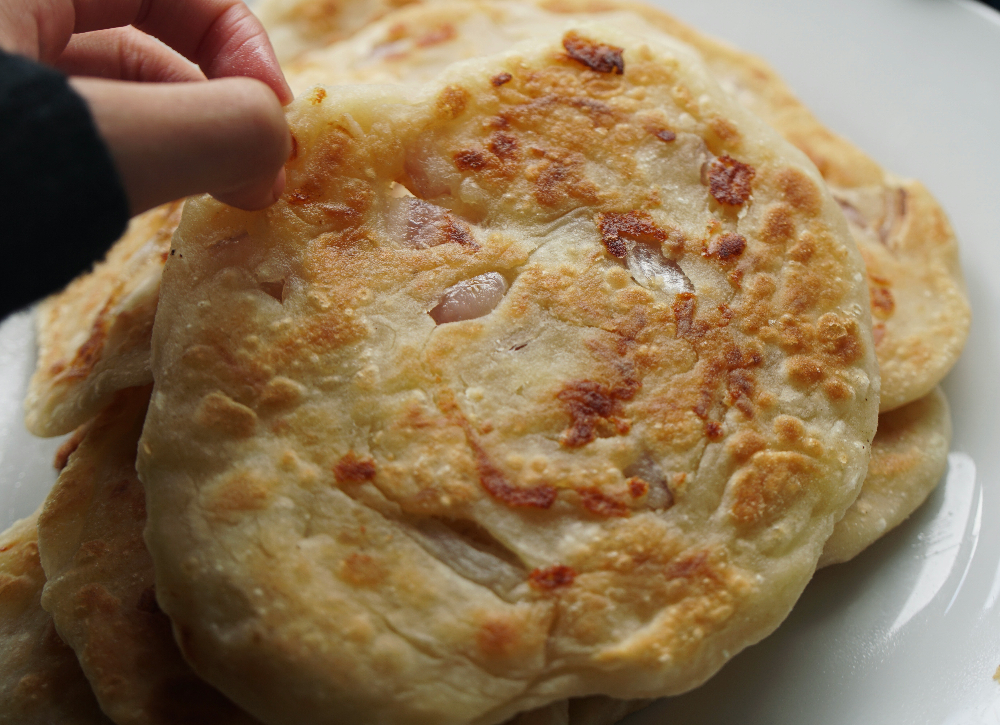

Porotta
HOME

Description
A porotta (or Malabar parotta) is a famous South Indian layered flatbread known for its unique flaky, chewy, and soft texture. Unlike the North Indian paratha made with wheat, this version traditionally uses refined flour and a specific oil-pleating technique to create distinct, buttery layers.
Ingredients
- Maida (All-Purpose Flour): 2 cups.
- Sugar: 1 teaspoon (helps with golden browning).
- Salt: ½ teaspoon or to taste.
- Oil/Ghee: 3–4 tablespoons for kneading and extra for layering.
- Water or Milk: Approximately ¾ cup (lukewarm milk makes it softer).
Steps
- Mix the flour, sugar, salt, and 1 tablespoon of oil, then gradually add water or milk to knead a soft, elastic dough for at least 10–15 minutes.
- Coat the dough with oil and let it rest under a damp cloth for at least 1–2 hours to allow the gluten to relax.
- Divide into balls, roll them out into very thin sheets, pleat them like a paper fan, and swirl them into a tight spiral coil.
- Gently flatten the spirals, cook on a hot tawa with oil until golden brown on both sides, and then crush the hot parottas with your hands to separate the flaky layers.